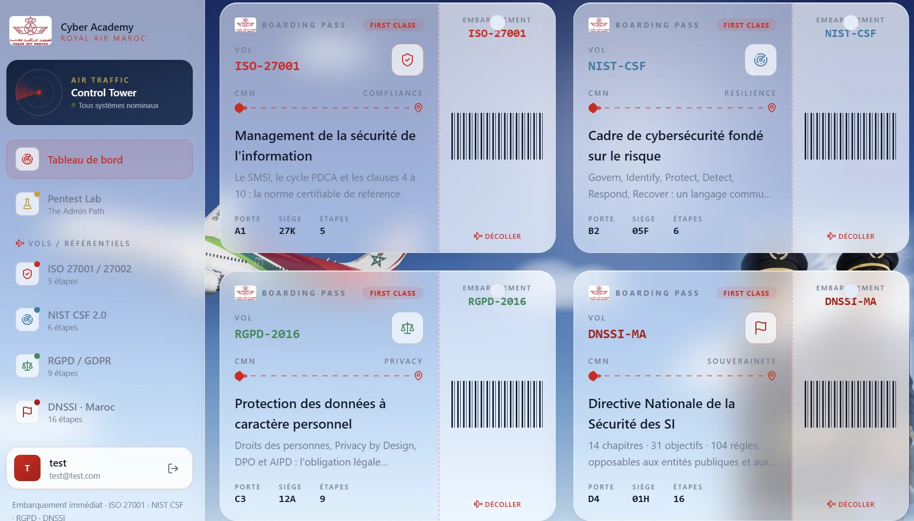

ISMS and controls
Includes Statement of Applicability reasoning and confidentiality, integrity, and availability classification.
Royal Air Maroc / GRC enablement / Solo project
An interactive learning platform that turns security and privacy frameworks into concise courses, applied scenarios, and exercises teams can revisit.

ISO/IEC 27001 and 27002, NIST Cybersecurity Framework 2.0, the General Data Protection Regulation, and the DNSSI each use different structures and language. Reading them is necessary, but passive reading alone does not build operational judgment.
The platform breaks each framework into a repeatable learning loop.
Includes Statement of Applicability reasoning and confidentiality, integrity, and availability classification.
Uses ransomware-response mapping and current-to-target profile gap analysis.
Includes breach triage, the 72-hour notification context, and data-protection impact reasoning.
Uses critical-infrastructure classification and directive audit exercises.
Each module offers a course view, scenario-based labs, and exercises. Content is structured as reusable data instead of being tied directly to presentation markup.
The interface is built with React and TypeScript and backed by a Python FastAPI service. Authentication uses salted PBKDF2-HMAC-SHA256 password hashing, constant-time comparison, and protected sessions.
The content model separates frameworks, lessons, labs, and exercises so new material can be added without redesigning the interface.
The platform consolidates four frameworks into one learning environment and provides eight applied lab themes across governance, risk, privacy, response, and national requirements.
The project is private and was developed during the internship. The screenshot and this high-level account show the learning model without publishing internal material.